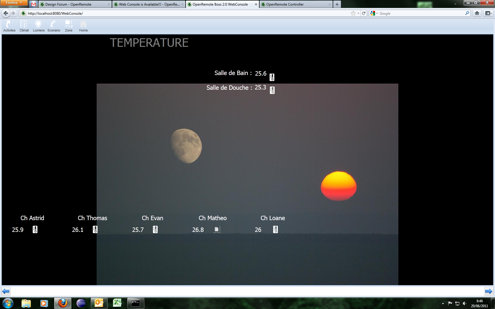

|
This page last changed on Jun 09, 2011 by kurrazyman.
 An initial release of the Web Console is now available.
This is a cross platform browser based console for displaying/interacting with your panels; this is the initial beta release and so it's not that 'pretty' at the moment but most basic functionality should be there.
Please give it a try and feedback any comments to help direct future versions!
Two options for download: -
1.Download from SVN and compile yourself: see here for instructions.
2.Download pre-compiled WAR and deploy it to the controller webapps folder of Tomcat: see here for instructions.
Rich
|
Excellent! Thank you for your efforts to get this release out.
– Juha

Posted by juha at Jun 10, 2011 09:28
|
|
Great.
I have noticed over the past couple of weeks that to many applications HTML 5 is the way to go to support multiple mobile platforms. To put it another way: up until now many application developers were satisfied with an iPhone app only. Now they need to support also Android but rather than adding another native app they migrate the solution to HTML (5) and in this way they support pretty much any recent, or future, smartphone.
First I thought the idea was silly and thought it was a not going to be acceptable to users to trade usability for developer convenience. Then I looked at some apps written using iQuery mobile and Sencha and had to say that I could not tell the difference from the native app.
One key component is PhoneGap. PhoneGap is a utility for packaging a html application so that it looks like a native application to the phone. This is important to the user so that the app can
1. Get started using a familiar shortcut icon
2. Get Downloaded from the Appstore.
The latter is still a bit of an issue: One developer I know claim that they develop there app using phonegap and that they have it distributed over the Apple Appstore. However other sources say this is not possible and Apple themselfes are against it and prefer applications developed natively for iPhone.
The PhoneGap makes use of the built-in browser on the phone so each application package is kept very small.
Anyway. I am glad there is a web-console. If it does not come to use on the mobile it may be helpful for debugging on my workstation.
Posted by toesterdahl at Jun 11, 2011 11:58
|
|
Hi Richard
I have installed the Web Console and it looks great. When it first opens up I get an error message
"The current controller doesn't support JSON API, polling is disabled, please upgrade the controller."
What should I do to fix this problem
Many thanks
Pierce
Posted by pjmm at Jun 13, 2011 21:06
|
|
Hi Pierce,
The problem is the JSON API isn't implemented in the Manager branch so you'll need the trunk downloadable version of the controller when I get some time I'll add the JSON support to the Manager branch.
Hope this helps
Rich
Posted by kurrazyman at Jun 13, 2011 21:13
|
|
Hi Richard,
A small detail to improve the next version of the WebConsole.
I'm using an panel designed for iPad. All the buttons, lables, ... seem to be correctly aligned in an area reflecting the iPad screen size except for the background image. This image is centered horizonally on the bottom of the browser. (see image  )
regards
Yann
Posted by yannph at Jun 29, 2011 07:53
|
|
Hi Yann,
I see what you are saying, I will look into this for the next release.
Thanks,
Rich
Posted by kurrazyman at Jun 29, 2011 08:36
|
|
{kind=link}